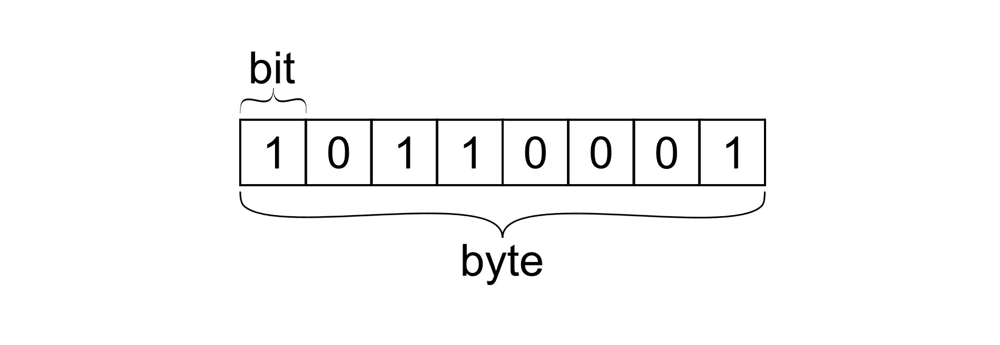

Binair stelsel

Wat is dit?
Het woord binair komt van "bi", dat betekent twee, dus het binair stelsel is een twee-tallig talstelsel.
Het binair stelsel is een digitaal talstelsel die bestaat uit nullen en enen.
Een talstelsel is een manier om getallen op te schrijven waarbij de plaats van een cijfer bepaalt hoeveel het waard is.
De reden dat er geen "normaal" talstelsel is, is omdat de computer een soort aan- en uitknop heeft.
Daarom kan het binaire stelsel maar 2 getallen gebruiken.
0 = uit
1 = aan
Het alfabet kan ook gekoppeld worden aan dit talstelsel, a=1, b=2, c=3 enzovoort.
Één cijfer (een 0 of een 1) heet een bit, afkorting van binairy digit.
Acht bits achter elkaar noem je een byte.
Hoe werkt dit?
De code bestaat uit bits, kijk hierboven.
Met behulp van een byte kan je getallen maken.
Een bit kan een 0 of een 1 zijn, dus per bit zijn er 2 mogelijkheden.
Een byte bestaat uit 8 bits, dus je kan acht keer 2 mogelijkheden hebben.
2⁸=256, je kan dus 256 verschillende getallen maken.
Dit komt overeen met 255 kleuren, want we beginnen bij 0 met tellen.
Er worden 3 kanalen gebruikt (R, G, B).
256x256x256= 16.777.216.
Er zijn dus 16,7 miljoen kleuren die een computer kan weergeven.